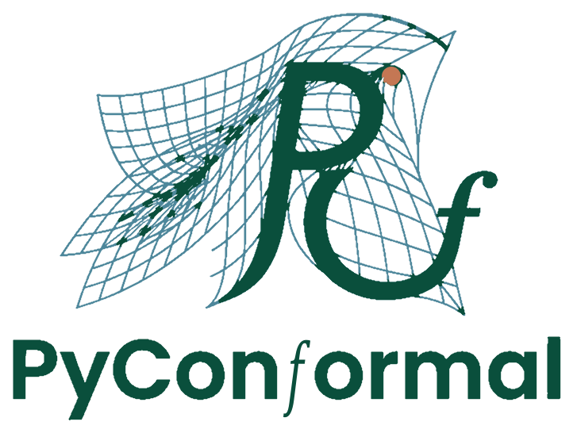
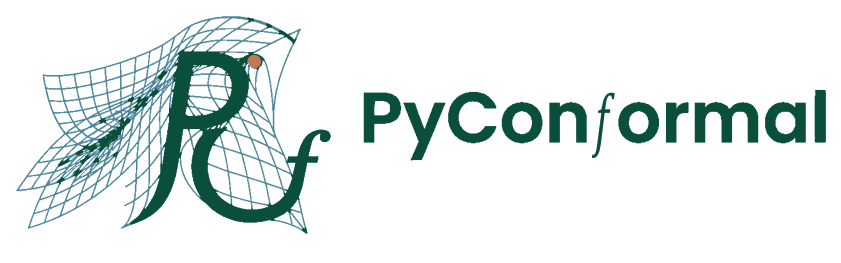
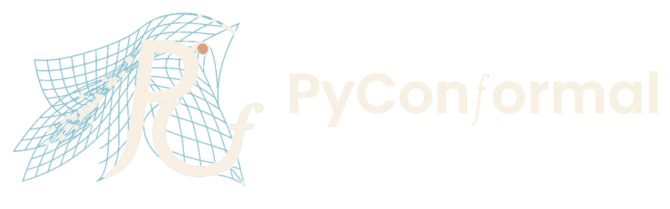
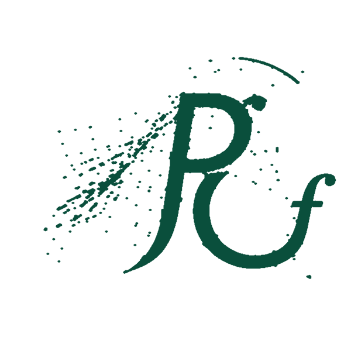

Superficie azul mineral, letras verdes, punto cobre y 𝑓 matemática en el nombre.




Originales SVG editables y transparentes. PyConformal es la marca de la web; PyConformal Engine conserva el nombre de la biblioteca y sus citas.